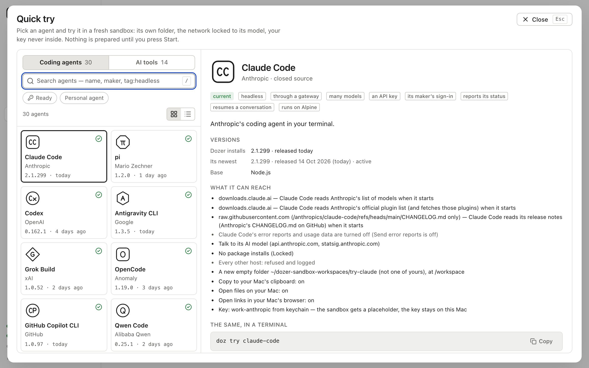
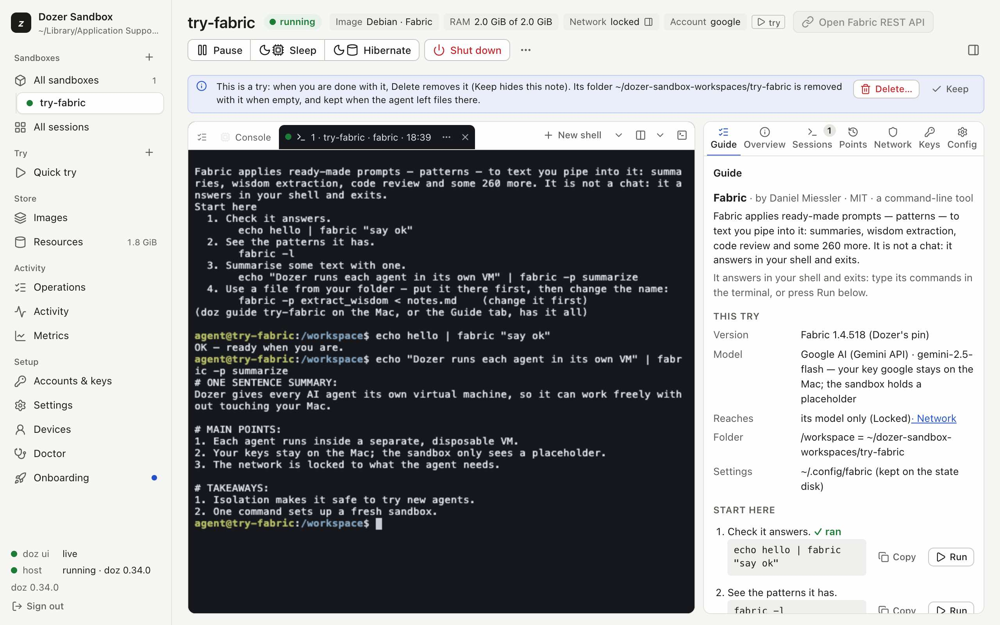

doz try - any of 42 AI tools in one command
doz try puts you in a throwaway sandbox with a coding agent or AI tool, its own empty folder, a network that reaches only its model and your key kept on your Mac.
Pick a tool and Dozable makes the sandbox, starts it and puts you in it. Nothing is installed on your Mac, and nothing of yours is shared with it. The first try of a tool prepares its image, which takes a few minutes, once.
doz try # the list: coding agents, then AI tools, and which are ready
doz try opencode # OpenCode, in a throwaway sandbox
doz try fabric --rm # delete it when you leave
What a try gets#
- A new empty folder under your projects folder, shared at
/workspace, so what the tool makes is on your Mac. Never one of yours. - A network that reaches its model and nothing else. Every other host is refused and logged.
- Your key, kept on your Mac. The sandbox only ever holds a placeholder. No key yet? The try asks for one, once.
--dry-run shows all of it before anything is made: the version, every host it can reach, the folder and the key.
doz try grok --dry-runWhen you leave, it asks whether to sleep it, delete it or keep it running. Deleting it removes its folder too, and asks first if the tool left files there.
42 tools#
Claude Code, Codex and pi, plus Gemini CLI, Grok Build, OpenCode, GitHub Copilot CLI, Goose, Qwen Code, Cline, OpenHands, Crush and more coding agents. And AI tools such as Fabric, llm, AIChat, ShellGPT, promptfoo and Google Stitch. The manual lists them all, with what each needs.
Choose the model#
Use a key from OpenAI, Anthropic, Google or xAI, or one key for many models through OpenRouter or Vercel AI Gateway. OpenCode can also use OpenCode Zen's free models, with no key at all.
doz try opencode --gateway openrouter --model anthropic/claude-sonnet-4.6
doz try opencode --provider opencode-zenIn the dashboard#
Try → Quick try shows the same tools as cards. Search, or filter by kind and category, and Try now opens its setup: where it gets its model, your key and the folder.

Each try opens on its Guide: what the tool is, the facts of this try, and its first commands. Run types a step into the tool's session; Copy puts it on your clipboard.

doz try is in Dozable 0.35. Upgrade with doz upgrade, then doz try.